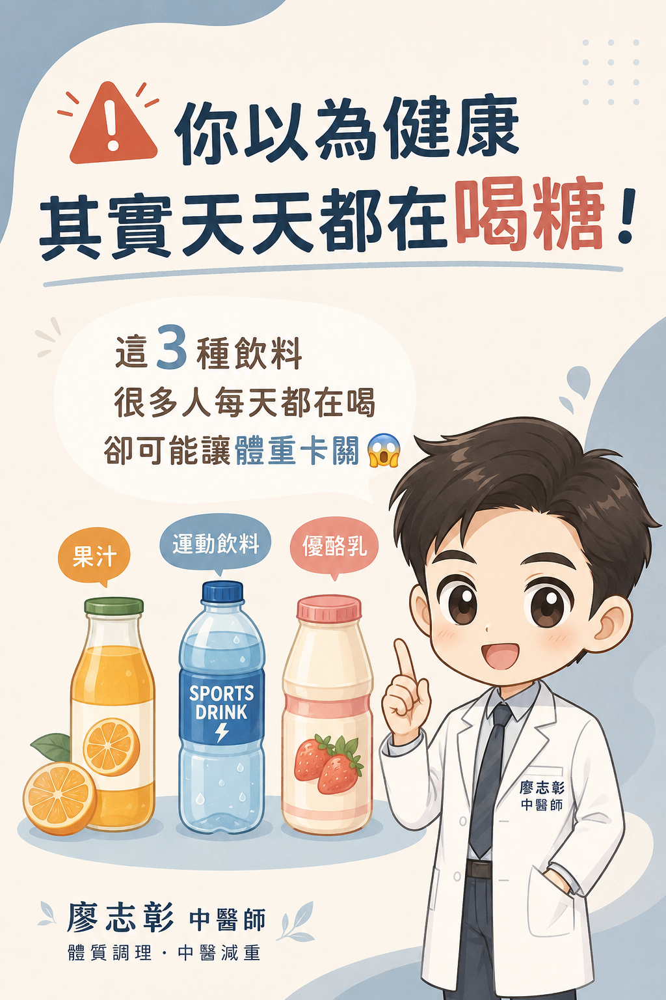
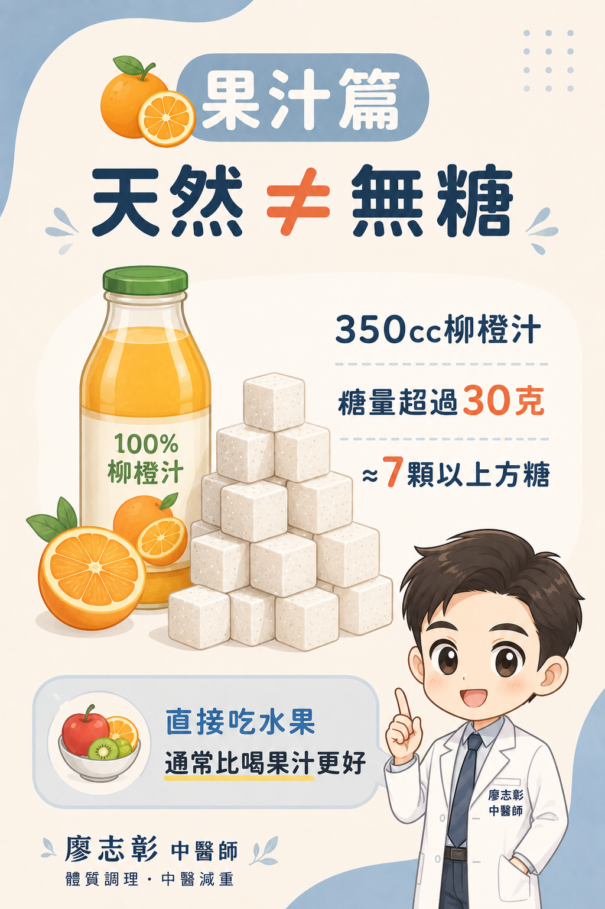
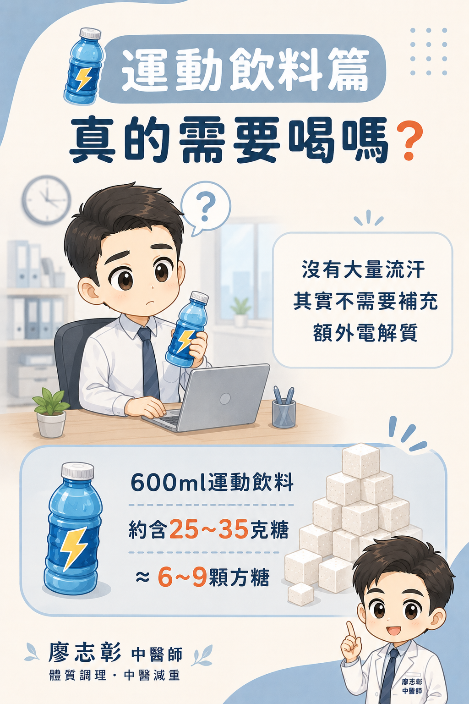
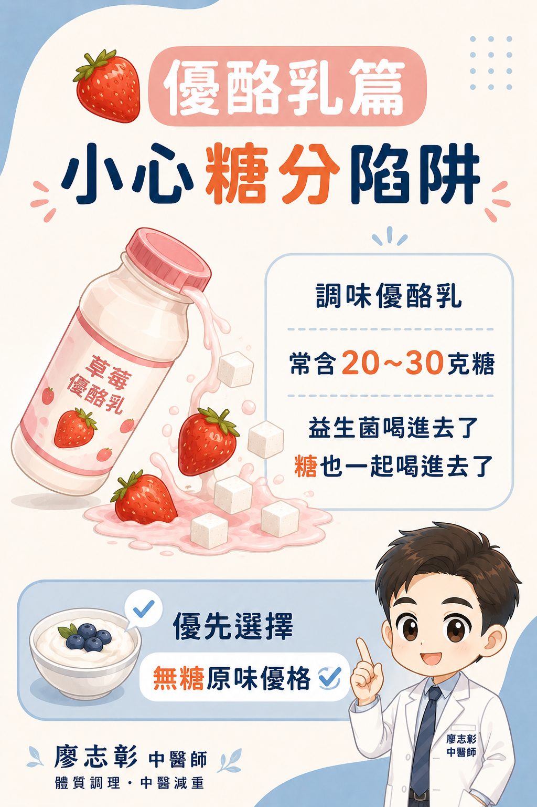
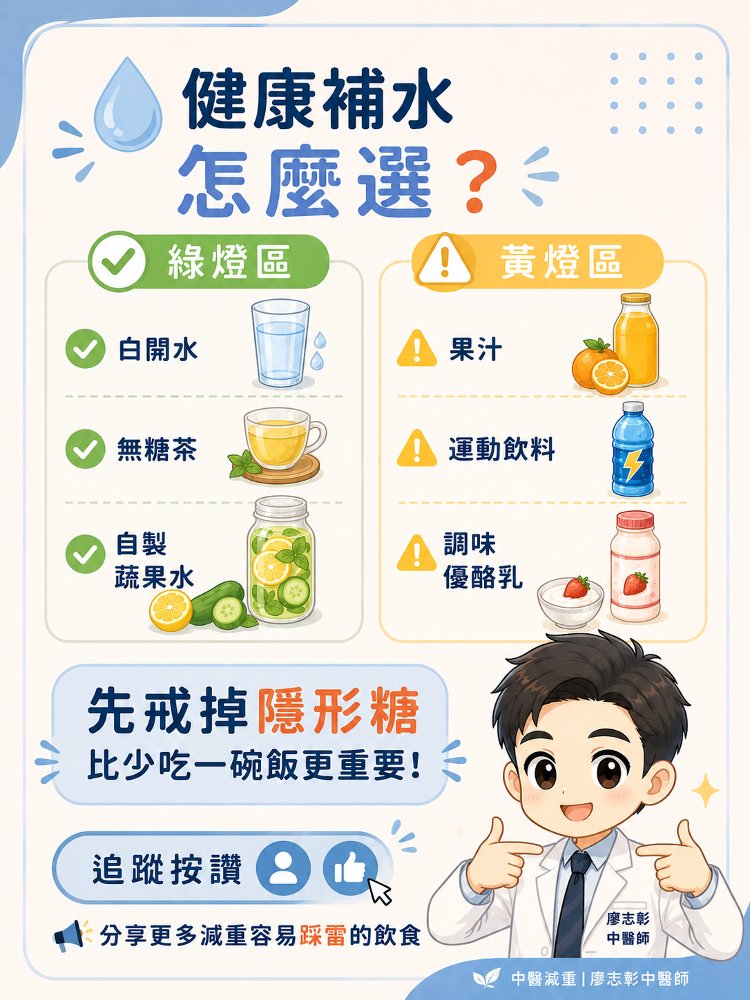

你以為健康，其實天天在喝糖
門診中常見一種情況：正餐吃得不多，也有努力控制甜食，但體重仍然卡關、容易疲倦、水腫，甚至下午常常想睡。這時候，問題有時不在飯菜，而是在每天喝進去的飲料。
果汁、運動飲料、優酪乳看起來比手搖飲健康，但若沒有注意份量與成分，仍可能帶來不少糖分。對正在減重、控制血糖或調整內臟脂肪的人來說，這些「隱形糖」很值得被看見。





果汁篇：天然不代表無糖
很多人認為 100% 純果汁應該很健康，但水果榨成果汁後，膳食纖維會大幅減少，飽足感也下降。相較於直接吃水果，喝果汁更容易在短時間內攝取較多糖分，也可能讓血糖上升更快。
以常見 350cc 柳橙汁來說，含糖量可能超過 30 公克，約相當於 7 顆以上方糖。雖然這些糖來自天然水果，但攝取過量時，仍可能增加肝臟代謝負擔，也不利於減重停滯期。
若想補充水果營養，廖醫師會建議優先選擇「直接吃水果」，並留意份量與時間。對正在減重的人來說，水果較適合放在白天、正餐後、小份量食用。
運動飲料篇：不是大量流汗，其實不一定需要
運動飲料的設計初衷，是給長時間運動、大量流汗的人補充水分、電解質與部分能量。如果只是日常上班、開車、追劇、短時間散步，通常不需要額外補充運動飲料。
多數運動飲料同時含有糖分。一瓶 600ml 運動飲料，含糖量可能落在 25 至 35 公克左右，約相當於 6 至 9 顆方糖。若沒有真的大量流汗，可能沒有補到運動，卻先補進熱量。
一般日常補水，白開水與無糖茶通常就很足夠。若是長時間運動、戶外高溫工作或大量流汗，再依實際情況評估是否需要電解質補充。
優酪乳篇：益生菌背後的糖分陷阱
優酪乳常被認為是顧腸胃的好選擇，但許多草莓、藍莓、水果風味優酪乳，為了讓口感更順、酸味更低，會加入不少糖分。每瓶含糖量常可達 20 至 30 公克。
也就是說，喝進益生菌的同時，也可能一起喝進不少糖。對腸胃敏感、容易脹氣、體重卡關或正在控制血糖的人，這一點特別需要注意。
比較好的選擇是無糖原味優格或無糖優酪乳，再搭配少量新鮮水果增加風味。這樣比較能保留發酵乳品的優點，也降低額外糖分攝取。
中醫怎麼看隱形糖？
從中醫角度來看，長期攝取過多糖分，容易助濕生痰，也可能讓脾胃運化負擔增加。若本身代謝較慢、脾胃虛弱或濕氣偏重，就更容易出現身體沉重、疲倦、水腫、腹脹與排便黏膩等狀況。
- 容易水腫，體重早晚波動明顯
- 身體沉重疲倦，睡再久也覺得累
- 腹脹、脹氣，或飯後特別想睡
- 排便黏膩、排不乾淨感
- 明明吃得不多，減重仍然停滯
健康補水怎麼選？
- 白開水：最單純，也最適合作為日常主要水分來源
- 無糖綠茶、烏龍茶：適合想要有味道但不想攝取糖分的人
- 自製蔬果水：用檸檬片、小黃瓜、薄荷等增加風味，不額外加糖
- 運動飲料：保留給長時間運動、大量流汗或醫師建議時使用
結論：先戒掉隱形糖，比少吃一碗飯更重要
減重時，很多人把注意力放在飯量，卻忽略每天喝的飲料。果汁、運動飲料、調味優酪乳都不是絕對不能喝，但如果天天喝、當水喝，就可能默默影響體重、血糖與代謝節奏。
如果你正在進行中醫減重，建議把飲料也記錄進飲食日記。回診時一起檢視，通常能更快找出減重卡關的真正原因。
延伸閱讀
參考資料
本文為一般飲食衛教資訊，不能取代個別診斷與營養處方。若有糖尿病、脂肪肝、腎臟病、慢性病、懷孕哺乳，或正在進行減重治療，飲食調整請先與醫師討論。